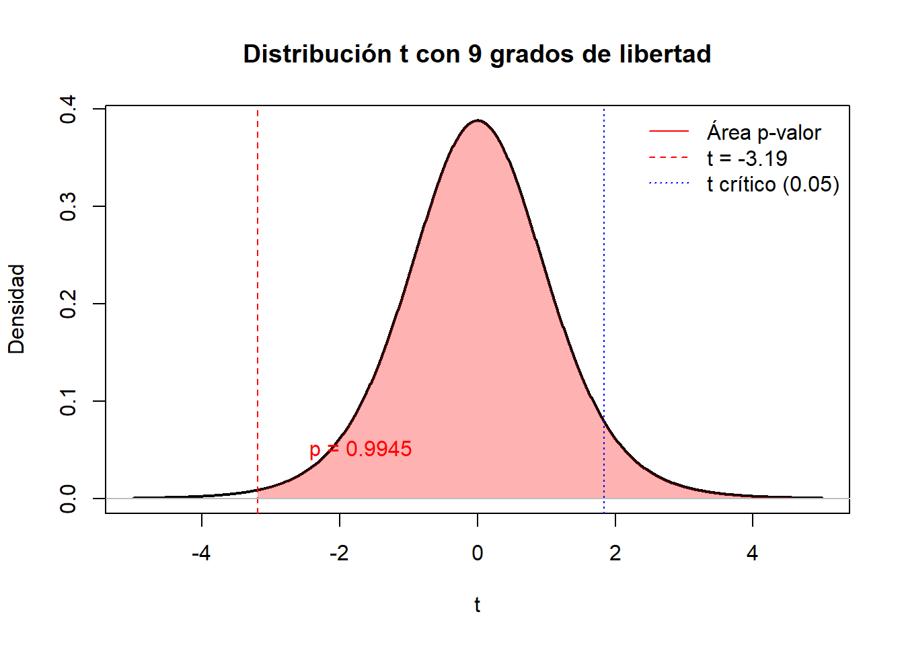

muestra<- c(8.103897 ,6.032269,10.890451,10.080311,8.649592,9.601323,8.603231,7.745418,9.564388,8.812499,9.569101,9.855030,9.235493, 12.510848,8.903146,8.936986,5.761009,9.073930,7.620851,7.177691,8.218177 ,10.943572, 10.246323,9.049131,6.459304)Módulo 6: Inferencia Estadística
Bioestadística Fundamental y Estadística Fundamental para las Ciencias de la Salud
🔰 Introducción
En la práctica del análisis de datos rara vez se cuenta con información completa de toda una población; en su lugar, trabajamos con muestras que deben servirnos como base para responder preguntas sobre el comportamiento general de dicha población. El proceso de trasladar hallazgos obtenidos a partir de una muestra hacia conclusiones más amplias recibe el nombre de inferencia estadística.
Este módulo introduce al estudiante en los fundamentos de la inferencia estadística aplicada a la bioestadística, partiendo de la noción de muestreo como puente entre la población y la muestra. A continuación, se abordan tres ejes centrales: la estimación puntual, que busca obtener un valor representativo para un parámetro poblacional; la estimación por intervalos, que permite cuantificar la incertidumbre de la estimación mediante intervalos de confianza; y las pruebas de hipótesis, que proporcionan un marco formal para evaluar afirmaciones sobre parámetros poblacionales a partir de la evidencia muestral.
Además de la formulación teórica, se hará énfasis en la implementación práctica en R, de manera que el estudiante pueda adquirir destrezas tanto en el cálculo como en la interpretación crítica de resultados, fortaleciendo así la capacidad de responder preguntas científicas en el campo de la biostatística de forma rigurosa, contextualizada y ética.
🎯 Objetivos
Objetivos específicos
Comprender el rol del muestreo en la inferencia estadística y su relación con la validez de las conclusiones.
Calcular e interpretar estimadores puntuales para parámetros poblacionales, reconociendo sus propiedades y limitaciones.
Construir e interpretar intervalos de confianza como medida de precisión y de incertidumbre en la estimación.
Formular y aplicar pruebas de hipótesis estadísticas, entendiendo su lógica y los posibles errores involucrados.
Implementar en R los principales métodos de estimación puntual, intervalos de confianza y pruebas de hipótesis en ejemplos prácticos de bioestadística.
Desarrollar una actitud crítica y responsable frente a los resultados inferenciales, enfatizando la importancia del contexto, los supuestos estadísticos y la ética en la interpretación y comunicación de hallazgos.
📖 Desarrollo
En R existen diferentes funciones ya implementadas que realizan estimaciones puntuales, intervalos de confianza y pruebas de hipótesis, sin embargo con lo que ya hemos aprendido, vamos a realizar los siguientes ejercicios haciendo las cuentas en el software.
Estimación puntual

Recordemos que existen diferentes estimadores puntuales, por un lado tenemos el estimador de máxima verosimilitud \(\hat{\theta}_{MLE}\), y por otro lado tenemos el estimador por el método de momentos \(\hat{\theta}_{MM}\).
Ejercicios
- Considere la siguiente muestra aleatoria proveniente de una distribución normal, calcule los estimadores de máxima verosimilitud para la media \(\mu\) y la varianza \(\sigma^2\). Rta:\(\mu=9\) y \(\sigma=1.5\)
| 8.103897 | 6.032269 | 10.890451 | 10.080311 | 8.649592 |
| 9.601323 | 8.603231 | 7.745418 | 9.564388 | 8.812499 |
| 9.569101 | 9.855030 | 9.235493 | 12.510848 | 8.903146 |
| 8.936986 | 5.761009 | 9.073930 | 7.620851 | 7.177691 |
| 8.218177 | 10.943572 | 10.246323 | 9.049131 | 6.459304 |
Estimación por intervalos
La estimación por intervalos está basada en encontrar una variable pivote que contega en su expresión al parámetro, a la información que proporciona la muestra y que su distribución no dependa del parámetro a estimar. Recordemos las fórmulas de los intervalos de confianza para una sola población.
| Parámetro | Variable pivote | Fórmula del intervalo de confianza |
|---|---|---|
| Media \(\mu\) con \(\sigma\) conocida | \(Z = \frac{\bar{x} - \mu}{\sigma / \sqrt{n}}\sim N(0,1)\) | \(\bar{x} \pm z_{1 - \alpha/2} \cdot \frac{\sigma}{\sqrt{n}}\) |
| Media \(\mu\) con \(\sigma\) desconocida | \(T = \frac{\bar{x} - \mu}{s / \sqrt{n}}\sim t_{n-1}\) | \(\bar{x} \pm t_{n-1, 1 - \alpha/2} \cdot \frac{s}{\sqrt{n}}\) |
| Proporción \(\hat{p}\) | \(Z = \frac{\hat{p} - p}{\sqrt{ \frac{\hat{p}(1 - \hat{p})}{n} }}\sim N(0,1)\) | \(\hat{p} \pm z_{1 - \alpha/2} \cdot \sqrt{ \frac{\hat{p}(1 - \hat{p})}{n} }\) |
| Varianza \(\sigma^2\) con \(\mu\) conocida | \(\chi^2 = \frac{\sum_{i=1}^{n}(x_i-\mu)^2}{\sigma^2} \sim \chi^2_{n}\) | \(\left[ \frac{(n - 1)s^2}{\chi^2_{n,1 - \alpha/2}},\ \frac{(n - 1)s^2}{\chi^2_{n,\alpha/2}} \right]\) |
| Varianza \(\sigma^2\) con \(\mu\) desconocida | \(\chi^2 = \frac{(n-1)s^2}{\sigma^2}\sim\chi^2_{n-1}\) | \(\left[ \frac{(n - 1)s^2}{\chi^2_{n-1,1 - \alpha/2}},\ \frac{(n - 1)s^2}{\chi^2_{n-1,\alpha/2}} \right]\) |
Ejercicio
Se obtuvo una muestra de los niveles de arsénico encontrados en paquetes de arroz de cierta marca. Se sabe que los niveles de arsenico siguen una distribución normal y según la FDA el límite máximo permitido arsénico en arroz es 0.25 mg/kg. Encuentra un intervalo de confianza del 99% para el nivel medio de arsénico y decide si la marca de arroz debe ser o no retirada del mercado. Adicionalmente encuentra intervalo de confianza al 95% para la variabilidad de los niveles de arsénico en el arroz de la marca.
| 0.1668462 | 0.1834053 | 0.1477304 | 0.1517635. | 0.1603168 |
| 0.1698843 | 0.1516698 | 0.2232762 | 0.1890869 | 0.1747316 |
| 0.1273578 | 0.2135094 | 0.1523728 | 0.1663394. | 0.1865947 |
| 0.1580923 | 0.1299129 | 0.1715803 | 0.1140778 | 0.1999403 |
arsenico<-c(0.1668462,0.1834053,0.1477304,0.1517635,0.1603168,0.1698843,0.1516698,0.2232762,0.1890869,0.1747316,0.1273578,0.215094,0.1523728,0.1663394,0.1865947,0.1580923,0.1299129,0.1715803,0.1140778,0.1999403)
mean(arsenico)[1] 0.1670037sd(arsenico)[1] 0.02783384qt(0.995,19)[1] 2.860935mean(arsenico)+c(-qt(0.995,19)*sd(arsenico)/sqrt(20),qt(0.995,19)*sd(arsenico)/sqrt(20))[1] 0.1491977 0.1848097(length(arsenico)-1)*sd(arsenico)*c(1/qchisq(0.975,19),1/qchisq(0.025,19))[1] 0.01609758 0.05937708También podemos construir intervalos de confianza para comparar el comportamiento de dos poblaciones, la siguiente tabla resume las variables pivote a usar según sea el caso. Supón dos muestras aleatorias \(X_1,X_2,...,X_n\) y \(Y_1,Y_2,...,Y_m\) provenientes de dos distribuciones normales con medias y varianzas \(\mu_X\), \(\sigma^2_X\) y \(\mu_Y\), \(\sigma^2_Y\), respectivamennte.
| Comparación | Supuestos | Variable pivote |
|---|---|---|
| Diferencia de medias | Muestras pareadas | \(T=\frac{\sqrt{n}(\bar{d}-\mu_d)}{S_d}\sim t_{n-1}\) con \(d_i=X_i-Y_i\), \(S_d^2=\frac{1}{n-1}\sum_{i=1}^{n}(d_i-\bar{d})^2\) y \(\mu_d=\mu_X-\mu_Y\) |
| Muestras Independientes, varianzas conocidas |
\(Z=\frac{\bar{X}-\bar{Y}-(\mu_X-\mu_Y)}{\sqrt{\frac{\sigma^2_X}{n}+\frac{\sigma^2_Y}{m}}}\sim N(0,1)\) | |
| Muestras Independientes, varianzas desconocidas e iguales |
\(T=\frac{\bar{X}-\bar{Y}-(\mu_X-\mu_Y)}{S_p\sqrt{\frac{1}{n}+\frac{1}{m}}}\sim t_{n+m-2}\) con \(S_p^2=\frac{(n-1)S_X^2+(m-2)S_Y^2}{n+m-2}\) | |
| Muestras Independientes, varianzas desconocidas y diferentes |
\(T=\frac{\bar{X}-\bar{Y}-(\mu_X-\mu_Y)}{\sqrt{\frac{S_X^2}{n}+\frac{S_Y^2}{m}}}\sim t_{v}\) con \(v\approx \frac{\left(\sqrt{\frac{S_X^2}{n}+\frac{S_Y^2}{m}}\right)^2}{\frac{\left(\frac{S_X^2}{n}\right)^2}{n-1}+\frac{\left(\frac{S_Y^2}{m}\right)^2}{m-1}}\) | |
| Razón de Varianzas | Medias conocidas | \(F=\frac{\frac{\sum_{i=1}^{n}(Y_i-\mu_Y)^2}{m}}{\frac{\sum_{i=1}^{n}(X_i-\mu_X)^2}{n}}\frac{\sigma^2_X}{\sigma^2_Y}\sim F_{(m,n)}\) |
| Medias desconocidas | \(F=\frac{\frac{\sum_{i=1}^{n}(Y_i- \bar{Y})^2}{m-1}}{\frac{\sum_{i=1}^{n}(X_i-\bar{X})^2}{n-1}}\frac{\sigma^2_X}{\sigma^2_Y}=\frac{S_Y^2}{S_X^2}\frac{\sigma^2_X}{\sigma^2_Y}\sim F_{(m-1,n-1)}\) | |
| Diferencia de proporciones |
\(Z=\frac{\hat{p}_X-\hat{p}_Y -(P_X-P_Y)}{\sqrt{\frac{\hat{p}_X(1-\hat{p}_X)}{n}+\frac{\hat{p}_Y(1-\hat{p}_Y)}{m}}}\sim N(0,1)\) |
Ejercicio Se desea testear la eficiencia de un nuevo medicamento para regular la presión arterial con respecto a la fórmula actual, se consideró un grupo de 10 personas con hipertensión, se les suministró el medicamento actual y se registró el tiempo en minutos que tardó en hacer efecto; al siguiente día se les suministró a las mismas 10 personas el medicamento nuevo y se registró el tiempo que tardó en hacer efecto. Construye un intervalo de confianza con nivel de signficancia del 95% para la diferencia de los tiempos medios que tardan los medicamentos en hacer efecto ¿Dirías que el nuevo medicamento es más efectivo?
| 1 | 2 | 3 | 4 | 5 | 6 | 7 | 8 | 9 | 10 | |
|---|---|---|---|---|---|---|---|---|---|---|
| Nuevo | 17.639 | 19.184 | 19.613 | 20.662 | 25.077 | 27.008 | 16.371 | 12.656 | 14.895 | 23.791 |
| Actual | 21.269 | 24.146 | 29.237 | 25.649 | 23.448 | 26.833 | 21.909 | 25.005 | 25.877 | 24.692 |
nuevo<-c(17.63971,19.18418,19.61335,20.66206,25.07705,27.00823,16.37143,12.65593,14.89515,23.79106)
actual<-c(21.26914,24.14610,29.23737,25.64860,23.44820,26.83353,21.90869,25.00543,25.87751,24.69202)
dif<-nuevo-actual
mean(dif)[1] -5.116844sd(dif)[1] 4.722745qt(0.975,9)[1] 2.262157mean(dif)+c(-qt(0.975,9)*sd(dif)/sqrt(10),qt(0.975,9)*sd(dif)/sqrt(10))[1] -8.495292 -1.738396Pruebas de Hipótesis
Las pruebas de hipótesis están estrechamente relacionadas con los intervalos confianza, y podemos usar las mismas variables pivotales para juzgar los sistemas de hipótesis dados pues; un intervalo de confianza proporciona un rango de valores plausibles para un parámetro poblacional, como la media. Por ejemplo, un intervalo de confianza del 95% indica que, si se repitiera el muestreo muchas veces, aproximadamente el 95% de los intervalos construidos incluirían el valor verdadero del parámetro. Por otro lado, una prueba de hipótesis evalúa una afirmación específica sobre un parámetro poblacional, como si la media es igual a un valor dado. La relación entre ambos métodos es que si un valor hipotético (por ejemplo, \(\mu=\mu_0\)) no está dentro del intervalo de confianza, entonces se rechaza la hipótesis nula al mismo nivel de significancia.
Ejercicio
Las siguientes son dos muestras aleatorias provenientes de dos poblaciones con distribución normal.
- Juzga el sistema de hipótesis sobre la igualdad de varianzas: \[H_0: \frac{\sigma^2_1}{\sigma^2_2}=1 \quad \text{vs} \quad H_a: \frac{\sigma^2_1}{\sigma^2_2}\neq1\]
- Basado en el resultado anterior elige la variable pivote adecuada para juzgar el siguiente sistema de hipótesis sobre la diferencia de medias.
\[H_0: \mu_1=\mu_2 \quad \text{vs} \quad H_a: \mu_1\neq\mu_2\]
| Poblacion | ||||||||||
|---|---|---|---|---|---|---|---|---|---|---|
| 1 | 0.3326 | 1.5008 | -2.1765 | 2.2790 | -1.0189 | 1.4064 | -0.1456 | 2.2994 | -0.9407 | -0.6975 |
| -2.2288 | 0.9060 | 1.0195 | 0.8002 | 0.3404 | ||||||
| 2 | 1.2545 | 1.8423 | 1.9791 | 4.6087 | 0.7123 | 1.4672 | -5.7277 | 2.6101 | -0.7495 | -1.9610 |
| -2.8334 | 1.1577 | 3.90824 | -1.2104 | -3.3756 | -1.9825 | -0.8446 | 3.1946 | 2.7747 | -1.0302 |
pob1 <- c(0.3326, 1.5008, -2.1765, 2.2790, -1.0189, 1.4064, -0.1456, 2.2994, -0.9407, -0.6975, -2.2288, 0.9060, 1.0195, 0.8002, 0.3404)
pob2 <- c(1.2545, 1.8423, 1.9791, 4.6087, 0.7123, 1.4672, -5.7277, 2.6101, -0.7495, -1.9610, -2.8334, 1.1577, 3.9082, -1.2104, -3.3756, -1.9825, -0.8446, 3.1946, 2.7747, -1.0302)Ejemplos
Primer punto: En la siguiente tabla se presentan los pesos en gramos, de dos grupos de conejos con diferentes dietas despues de 64 días de aplicadas.
library(knitr)Warning: package 'knitr' was built under R version 4.4.3# Crear los vectores
dieta_a <- c(800, 850, 900, 870, 890, 960, 970, 950, 880, 900)
dieta_b <- c(700, 780, 700, 900, 800, 780, 850, 890)
# Combinar en un data frame
tabla <- data.frame(
Grupo = c("Dieta A", "Dieta B"),
rbind(
dieta_a,
c(dieta_b, rep(NA, length(dieta_a) - length(dieta_b))) # completar con NA si es más corto
)
)
# Asignar nombres a las columnas
colnames(tabla) <- c("Grupo", paste0("V", 1:(ncol(tabla)-1)))
# Mostrar la tabla
kable(tabla, caption = "Valores por grupo en formato ancho")| Grupo | V1 | V2 | V3 | V4 | V5 | V6 | V7 | V8 | V9 | V10 | |
|---|---|---|---|---|---|---|---|---|---|---|---|
| dieta_a | Dieta A | 800 | 850 | 900 | 870 | 890 | 960 | 970 | 950 | 880 | 900 |
| Dieta B | 700 | 780 | 700 | 900 | 800 | 780 | 850 | 890 | NA | NA |
Encuentre el estimador puntual para la media y la varianza de los pesos en gramos de los dos grupos de conejos.
Un estimador puntual para la media \(\theta = \mu\) está dado por la siguiente expresión:
\[ \bar{X} = \dfrac{1}{n}\sum_{i=1}^nX_i \]
Una estimación puntual para la media \(\theta = \mu\) está dada por la siguiente expresión:
\[ \bar{x} = \dfrac{1}{n}\sum_{i=1}^nx_i \]
mean(dieta_a)[1] 897mean(dieta_b)[1] 800La estimación puntual para la media de los pesos, en gramos, del grupo A de conejos es: 897
La estimación puntual para la media de los pesos, en gramos, del grupo B de conejos es: 800
Un estimador puntual para la varianza \(\theta = \sigma^2\) está dado por la siguiente expresión:
\[ S^2 = \dfrac{1}{n-1}\sum_{i=1}^n(X_i-\bar{X})^2 \]
Una estimación puntual para la varianza \(\theta = \sigma^2\) está dada por la siguiente expresión:
\[ s^2 = \dfrac{1}{n-1}\sum_{i=1}^n(x_i-\bar{x})^2 \]
La estimación puntual para la varianza de los pesos, en gramos al cuadrado, del grupo A de conejos es: 2756.67 g^2
round(var(dieta_a),2)[1] 2756.67round(var(dieta_b),2)[1] 5914.29¿Existe alguna razón para creer, con un nivel de significancia de 0.05, que el peso en gramos después de 64 días de aplicada la dieta A es mayor a 950 gramos? Indique los supuestos. Adicionalmente, calcule el p-valor.
Definimos el siguiente sistema de hipótesis a una cola a la derecha:
\[ \begin{align*} H_0 &: \mu \leq 950\\ H_1 &: \mu > 950\\ \end{align*} \]
Asumimos varianza poblacional \((\sigma^2)\) desconocida, datos provenientes de una población normal y una muestra pequeña. Por ende, usamos la prueba t de Student.
Así, el estadístico de prueba T esta dado por la siguiente expresión:
\[ t = \dfrac{\bar{x}-\mu_0}{s/\sqrt{n}} \]
Note que, en nuestro caso particular, para el grupo que recibio la dieta A, \(\bar{x}=897\), \(\mu_0=950\), \(s = \sqrt{2756.67} = 52.5\) y \(n=10\).
t.test(dieta_a, mu = 950, alternative = "greater")
One Sample t-test
data: dieta_a
t = -3.1922, df = 9, p-value = 0.9945
alternative hypothesis: true mean is greater than 950
95 percent confidence interval:
866.5644 Inf
sample estimates:
mean of x
897 De aquí que t =-3.1922 y p-value = 0.9945.
Las reglas de desición estan dadas por:
Rechazar \(H_0\) si \(t > t_\alpha\) donde \(t_\alpha = t_{0.05,9}\)
El valor de \(t_{0.05,9}\approx 1.83\) obtenido a través de:
qt(0.05,9,lower.tail = F)[1] 1.833113Recordemos que \(P(T>-3.19) = \text{p-value}\). Note que el \(\text{p-value}\) será muy cercano a 1 ya que, por una parte, al estar por debajo de cero, este será mayor a 0.5. Además, este es un valor relativamente “grande”, con lo que por la simetría de la distribución es fácil ver que tendremos un valor alto de área acumulada por debajo de la función de distribución t.

- ¿Existe alguna razón para creer, con un nivel de significancia de 0.05, que el peso en gramos después de 64 días de aplicada la dieta B es mayor a 850 gramos? Indique los supuestos. Adicionalmente, calcule el p-valor.
Definimos el siguiente sistema de hipótesis a una cola a la derecha:
\[ \begin{align*} H_0 &: \mu \leq 950\\ H_1 &: \mu > 950\\ \end{align*} \]
Asumimos varianza poblacional \((\sigma^2)\) desconocida. Por ende, usamos la prueba t de Student.
Así, el estadístico de prueba T esta dado por la siguiente expresión:
\[ t = \dfrac{\bar{x}-\mu_0}{s/\sqrt{n}} \]
El grupo al que se le administro la dieta b, cuenta con los siguientes valores: \(\bar{x}=800\), \(\mu_0=850\), \(s = \sqrt{5914.29} = 76.9\) y \(n=8\).
- ¿Existe evidencia de que los pesos promedios de ambos grupos de conejos son distintos? Use α = 0.01. Indique los supuestos y pruebe el supuesto de varianzas.
Definimos el siguiente sistema de hipótesis a una cola a la derecha:
\[ \begin{align*} H_0 &: \mu_A = \mu_B\\ H_1 &: \mu_A \neq \mu_B\\ \end{align*} \]
Primero realizaremos una prueba para el supuesto de varianzas iguales.
\[ H_0 : \sigma^2_A = \sigma^2_B \qquad \text{vs} \qquad H_1 : \sigma^2_A \neq \sigma^2_B \]
Para este caso, haremos una prueba de razón de varianzas tambien conocida como una prueba F de Fisher.
\[ F = \frac{S_1^2}{S_2^2} \]
La regla de decisión está dada por:
\[ F > F_{\alpha/2;\, n_1 - 1,\, n_2 - 1} \]
Donde \(F =0.466\) y \(F_{\alpha/2;\, n_1 - 1,\, n_2 - 1}=F_{0.01/2;\,9,\, 7}=8.51\). Además, \(\text{p-value}=0.28\)
var.test(dieta_a,dieta_b, alternative = "two.sided", coef.level = 0.99)
F test to compare two variances
data: dieta_a and dieta_b
F = 0.4661, num df = 9, denom df = 7, p-value = 0.2836
alternative hypothesis: true ratio of variances is not equal to 1
95 percent confidence interval:
0.09663738 1.95625628
sample estimates:
ratio of variances
0.4661031 qf(0.01/2,9,7,lower.tail = F)[1] 8.513823Podemos asumir varianzas iguales y continuar con el análisis sobre los pesos promedios de ambos grupos de conejos.
Así, el estadístico de prueba T para muestras independientes está dado por la siguiente expresión, note que estamos en un caso de Diferencia de Medias con Varianzas Desconocidas suponiendo igualdad :
\[ T = \dfrac{(\bar{X}-\bar{Y})-(\mu_X-\mu_Y)}{S_p\sqrt{\frac{1}{n}+\frac{1}{m}}}\sim t_{n+m-2}\]
\[ S_p = \sqrt{\frac{(n-1)S_X^2+(m-2)S_Y^2}{n+m-2}} \]
Note que, en nuestro caso particular, para el grupo que recibio la dieta A, \(\bar{x}=897\), \(\mu_0=950\), \(s = \sqrt{2756.67} = 52.5\) y \(n=10\).
\[ T = \dfrac{(897-800)-(0)}{S_p\sqrt{\frac{1}{10}+\frac{1}{8}}}\sim t_{10+8-2}\] \[ S_p = \sqrt{\frac{(10-1)*2756.67+(8-2)*5914.29}{10+8-2}} \]
\[ S_p = \sqrt{\frac{60295.77}{16}} = 61.39 \]
Obtenemos un valor del estadístico T = 0.75 que comparamos con el valor de una t con 16 grados de libertad al nivel de significacncia del 1% con lo que obtenemos \(t_c=2.58\)
qt(0.01,16,lower.tail = F)[1] 2.583487t.test(dieta_a, dieta_b, var.equal = TRUE, alternative = "two.sided")
Two Sample t-test
data: dieta_a and dieta_b
t = 3.1789, df = 16, p-value = 0.00583
alternative hypothesis: true difference in means is not equal to 0
95 percent confidence interval:
32.31412 161.68588
sample estimates:
mean of x mean of y
897 800 \[ T = \frac{(\bar{X} - \bar{Y}) - (\mu_X - \mu_Y)}{S_p \sqrt{\frac{1}{n} + \frac{1}{m}}} \sim t_{n+m-2} \]
\[ S_p^2 = \frac{(n - 1) S_X^2 + (m - 1) S_Y^2}{n + m - 2} \]
Sustituyendo con nuestros valores:
\[ S_p^2 = \frac{(10 - 1)(2756.667) + (8 - 1)(5914.286)}{10 + 8 - 2} = \frac{9 \cdot 2756.667 + 7 \cdot 5914.286}{16} \]
\[ S_p^2 = \frac{24810.003 + 41400.002}{16} = \frac{66210.005}{16} = 4138.125 \]
\[ S_p = \sqrt{4138.125} \approx 64.31 \]
Ahora calculamos el estadístico ( T ):
\[ T = \frac{897 - 800}{64.31 \cdot \sqrt{\frac{1}{10} + \frac{1}{8}}} = \frac{97}{64.31 \cdot \sqrt{0.225}} = \frac{97}{64.31 \cdot 0.4743} = \frac{97}{30.49} \approx 3.18 \]
Obtenemos un valor de la estadística \[ T = 3.18 \], que comparamos con el valor crítico de una t con \[ 16 \] grados de libertad.
Copyright © 2025 Jose M. Leon & Laura E. Pardo - Created with Quarto